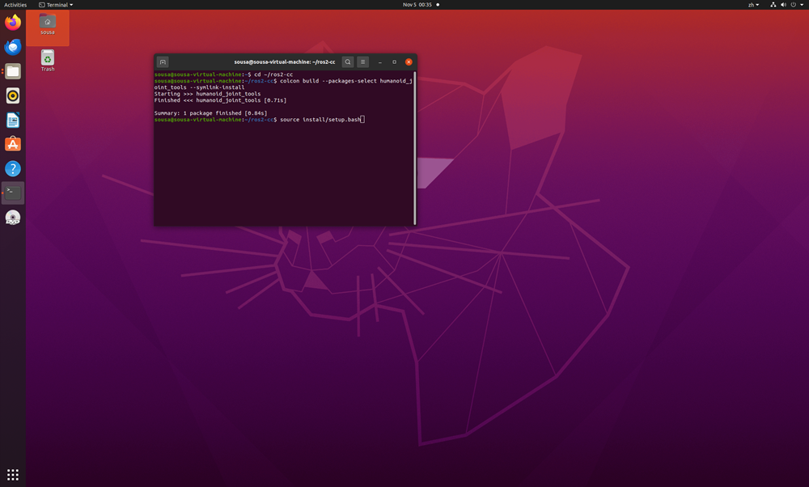
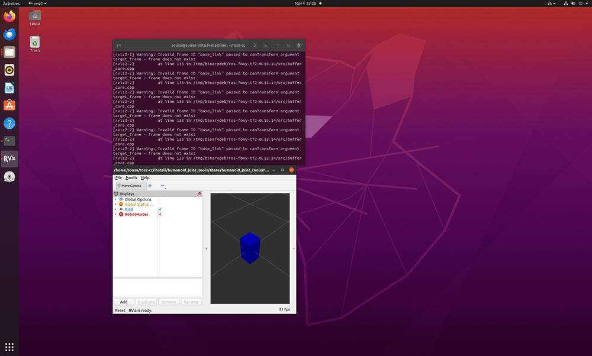
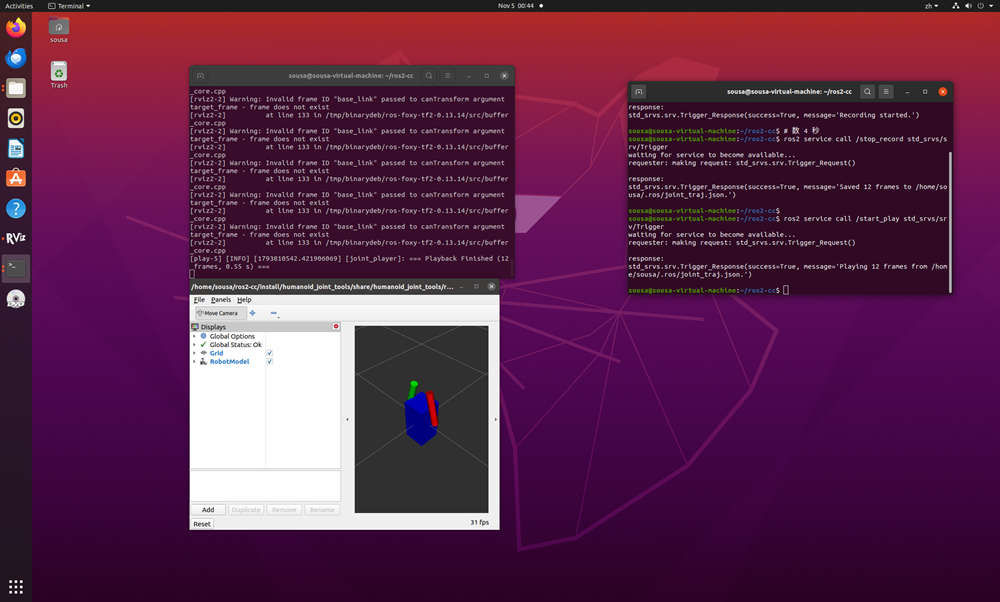
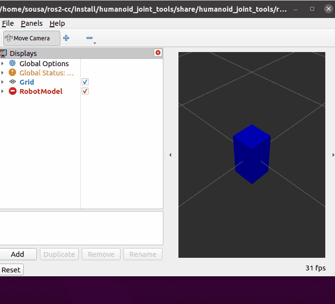

humanoid_joint_tools 使用说明
人形机器人关节轨迹录制与回放工具（ROS 2 功能包）
修改概述 / Overview
-
中文：新增人形机器人关节轨迹录制与回放工具。该模块包含假数据发生器、录制节点和回放节点。通过发送 Trigger 服务指令，可实时录制
/joint_states_raw数据并保存为 JSON 文件；回放节点读取 JSON 后按录制时间戳重新发布到/joint_states，驱动 RViz 中的机器人模型复现动作。回放播完即止，不循环。 -
English: Add humanoid joint trajectory recorder and player tool. It includes a mock driver, a recorder, and a player. Users can record
/joint_states_rawto a JSON file via Trigger services, then replay the trajectory (published to/joint_stateswith original timestamps) to drive the URDF model in RViz2. Playback runs once and stops.
运行环境
- 操作系统：Ubuntu 20.04
- ROS 版本：ROS 2 Foxy
- 依赖库：Python 3.8,
sensor_msgs,std_srvs,launch,launch_ros,ament_index_python,robot_state_publisher,rviz2
核心代码文件
本模块包含以下核心文件，均已提交至仓库：
src/
└── humanoid/
└── humanoid_joint_tools/
├── launch/
│ └── main.launch.py # 节点一键启动文件
├── resource/
│ └── humanoid_joint_tools # resource 资源标识文件
├── humanoid_joint_tools/ # 核心代码子目录
│ ├── __init__.py # Python 包初始化文件
│ ├── mock.py # 假数据发生器（正弦波轨迹）
│ ├── record.py # 录制节点（保存为 JSON）
│ └── play.py # 回放节点（读取并重发）
├── test/ # 单元测试
│ ├── __init__.py
│ └── test_joint_recorder.py # 录制节点测试
├── urdf/
│ └── simple_humanoid.urdf # 演示用极简人形机器人模型
├── rviz/
│ └── demo.rviz # RViz 配置文件
├── package.xml # ROS 2 功能包描述文件
├── setup.cfg # 节点安装路径配置文件
└── setup.py # ROS 2 功能包配置文件
核心代码内容
本模块的核心代码已上传至仓库 src/humanoid/humanoid_joint_tools/ 目录下。
完整代码请点击下方链接查看：
- 查看 mock.py 代码
- 查看 record.py 代码
- 查看 play.py 代码
- 查看 main.launch.py 代码
- 查看 setup.py 代码
- 查看 test_joint_recorder.py 代码
功能说明 / Boundary behavior
-
中文：录制节点通过 ROS 2 Service (std_srvs/Trigger) 控制起止。启动录制后，缓存
/joint_states_raw数据；停止录制时，将数据序列化写入~/.ros/joint_traj.json。回放节点提供/start_play服务；当auto_play:=true时，节点启动后若已存在录制文件会立即回放一次，此后每当文件被新的录制覆盖（内容变化）时再自动回放一次；回放按录制帧的时间戳调度发布，播完最后一帧即停止，不循环。 -
English: The recorder uses ROS 2 Services (std_srvs/Trigger) to start and stop recording. It caches
/joint_states_rawand saves them to~/.ros/joint_traj.json. The player exposes a/start_playservice; withauto_play:=true, it replays the existing file once shortly after startup and again whenever the file is replaced by a new recording (content change). Playback is scheduled by recorded frame timestamps and stops after the last frame, with no looping.
启动步骤
- 进入 ROS2 工作空间
cd <你的 ROS 2 工作空间> - 编译功能包
colcon build --packages-select humanoid_joint_tools source install/setup.bash - 使用 launch 文件一键启动（启动模型、RViz、假数据及录制/回放节点）
ros2 launch humanoid_joint_tools main.launch.py - 新开一个终端窗口，同样进入工作空间并加载环境，发送录制指令
cd <你的 ROS 2 工作空间> source install/setup.bash # 开始录制 ros2 service call /start_record std_srvs/srv/Trigger - 等待几秒后，发送停止录制指令（此时会生成 json 文件）
ros2 service call /stop_record std_srvs/srv/Trigger - 发送回放指令，模型按录制轨迹动作一次后停止
ros2 service call /start_play std_srvs/srv/Trigger
运行效果
节点启动后，RViz 将显示机器人模型。执行开始/停止录制指令后，终端会打印保存成功信息；随后调用 /start_play 服务（或启动时加 auto_play:=true），模型即按录制轨迹回放一次，播完停止。
- 编译成功

- 启动节点与 RViz 可视化

- 录制保存成功并回放

- 完整操作流程演示动图
